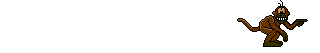
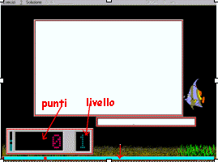
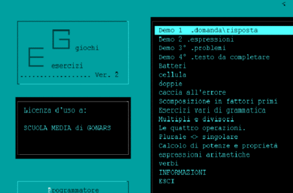
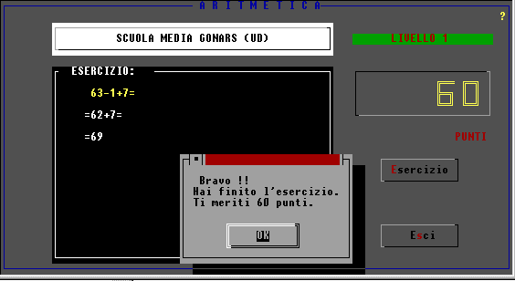
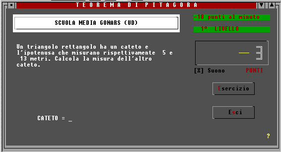
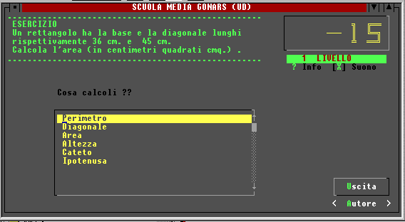
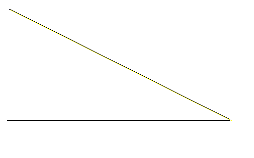

In ricordo
Tra il 1995 e il 2000 il Prof. Muscolino scrisse, per i suoi alunni della Scuola Media di Gonars, una serie di programmi: esercizi di matematica in Visual Basic per DOS che giravano su computer 286 monocromatici senza disco fisso, programmi multimediali per Windows, simulazioni scientifiche in Delphi. Li regalava a tutti sul suo sito, con una regola: "il gioco è un premio, ma prima si lavora".
Fuori dalla scuola era radioamatore (IV3MSU, ex IT9MSU): dalla Sicilia, con un ricetrasmettitore costruito da lui, fino a Palmanova.
Questi programmi sono stati recuperati dagli archivi del web e rifatti fedelmente partendo dai suoi codici sorgente, dai suoi file di esercizi e dalle sue guide. I testi, i messaggi e perfino le battute ("Non cliccarmi !!!! BASTAAAA....") sono i suoi.

Esercizi programmabili

EM – Esercizi Multimediali
Esercitazioni a livelli con testi, immagini e suoni: digitare, scegliere, selezionare, cliccare sul disegno. Con l'editor per gli insegnanti.
Windows, 1998-2000 · 9 esercitazioni originali
E.G. – Esercizi e Giochi
Soft programmabile per esercitazioni o test multidisciplinari, a cinque livelli, con il gioco come premio.
Visual Basic per DOS, 1997-98 · 16 esercitazioni originaliEsercizi di matematica

Espressioni
Risolvere espressioni scrivendo tutti i passaggi, "con le stesse regole che usi sul quaderno".
Vari DOS
Teorema di Pitagora
Problemi con i dati generati a caso, cinque livelli di difficoltà.
Vari DOS
Geometria piana
Rettangoli, rombi e trapezi: scegli cosa calcolare, poi calcolalo. Dopo due errori arriva la formula.
Visual Basic per DOS · Versione 2.3Altri esercizi
Allenamento veloce con punteggio, livelli e tempo.
"Le quattro operazioni" è ricostruito dalla sua descrizione: il sorgente non fu pubblicato.Simulazioni

Archimede
La spinta idrostatica: scegli solido, liquido e cavità, e sposta il solido con il mouse.
Delphi 1
Talete
Un raggio di sole, due legni rossi e le loro ombre: scopri la similitudine.
Delphi 1Giochi (il premio)
Puzzle
Il suo puzzle di numeri per due giocatori: vince chi riordina i numeri con meno mosse.
Gorillas
Il gioco che i suoi programmi DOS lanciavano come premio: la sua versione originale (MSU.EXE), dentro un emulatore DOS. Funziona quando il sito è pubblicato o avviato con un piccolo server.
Duello
Due cannoni, angolo e velocità: un gioco nuovo, usato al posto di Gorillas quando il sito è aperto direttamente dal disco.
Archivio
I file recuperati sono conservati senza modifiche: codici sorgente, programmi originali, guide e immagini del sito. Le esercitazioni originali sono anche disponibili in forma leggibile.
- Il sito originale e i file originali in
archivio/originali/(sorgenti ineg/eg.txt,matdos/*.txt,profedit/profe0.txt) - Esercitazioni decodificate
- Note sul recupero e formati dei file